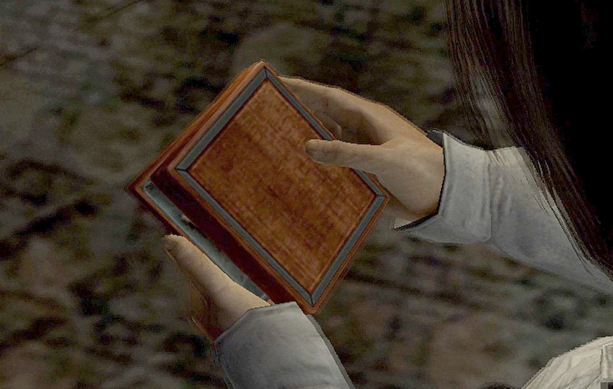
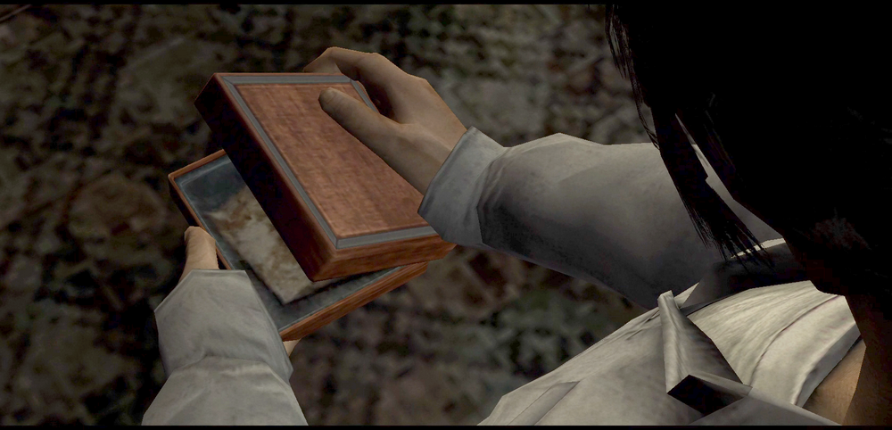
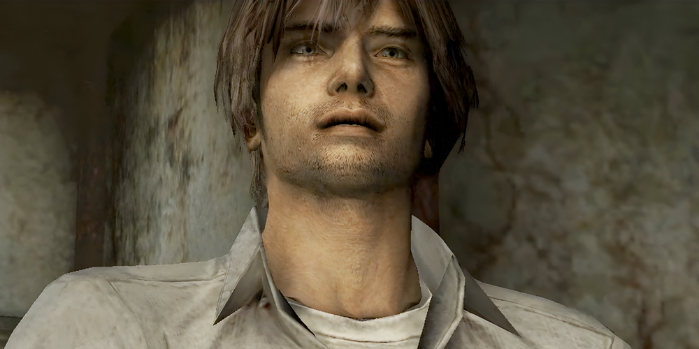
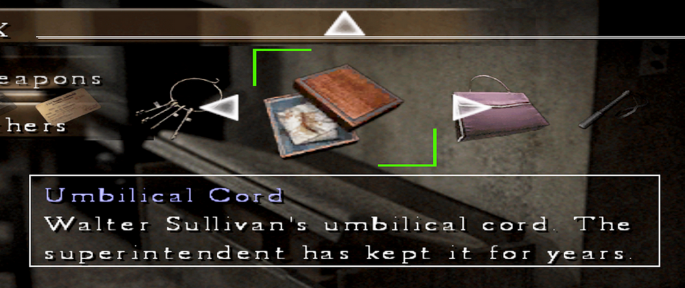
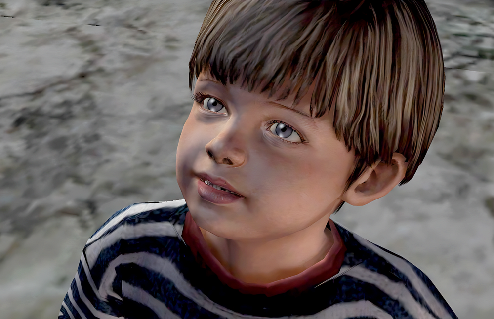

[SH4] A Mother's Cord

The Meaning of the Umbilical Cord in Japanese Culture
![[SH4] A Mother's Cord](img/da19.png)
This is a mirror of the DeviantArt version linked above, provided as a backup and for easier access.

To Westerners, an umbilical cord might seem quite gross, but in Japan, it's still common for maternity hospitals to give mothers a small wooden box containing the dried cord after childbirth.

The actual item looks just like the box Henry is holding.
He looks like he's about to die from the smell, lol—but that's obviously just an exaggeration in the story...

In reality, it doesn't smell, and it's not particularly useful. It's more of a keepsake, something to remind the mother of her connection to the child.
It is often kept together with the maternal and child health handbook (called a "boshi techo"), which mothers receive from an obstetrician when pregnancy is confirmed, as a memento of the pregnancy and early days with the child.
For example, when a child doesn't grow exactly as the mother hoped, she uses it to remind herself, "Even so, this child was born from me," haha.
Later, when the mother passes away, the cord is sometimes placed in her coffin as a wish to be reunited with her child in the next life. It can also serve as a kind of charm for the child's healthy growth. It can have various other meanings depending on the region and the era.
In any case, this is extremely personal, and even in Japan, other people's would feel uncomfortable, so it's not something you'd share with friends or others.
That's why if the mother doesn't love her child or their bond is strained, it's often the first thing to be thrown away. In short, the umbilical cord is a symbol of love for a child.

In the game, the umbilical cord was featured as a key item for the narrative.
But looking at it from a Japanese viewpoint, the fact that Frank kept the cord of a child abandoned by his parents might be a nod to the creators' message—a sliver of hope that even a child discarded by their own family still had someone who cared.
Whenever Walter came around, Frank was, after all, looking out for him. Not that he actually did anything…
If Walter had picked up on that emotional nuance, things might've been different. Well, he is American.
